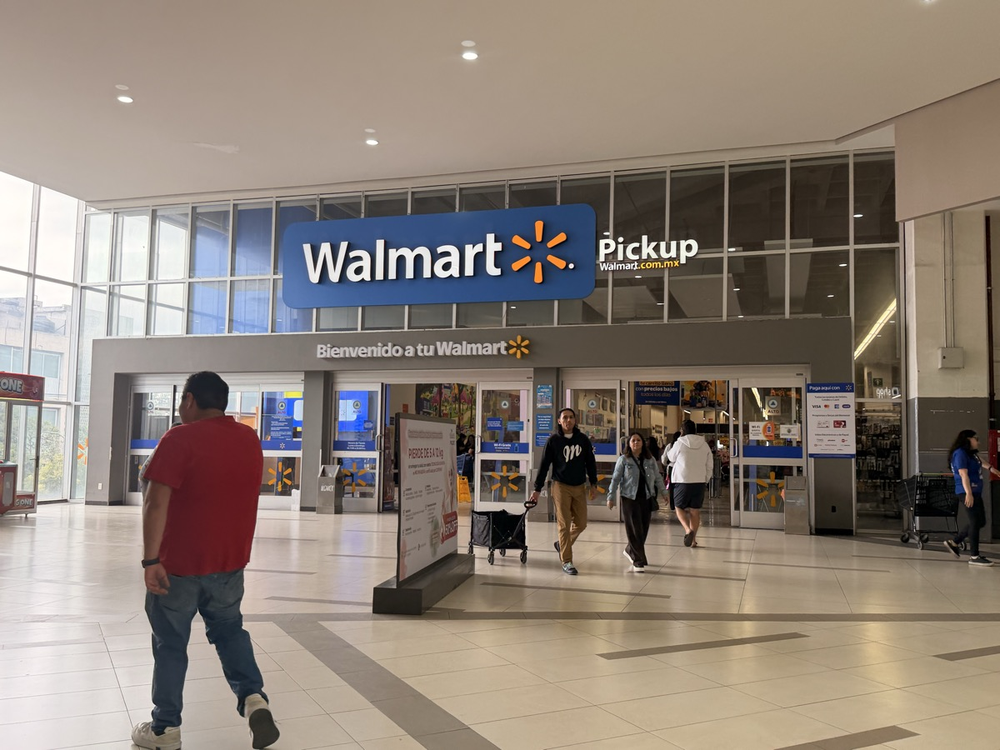
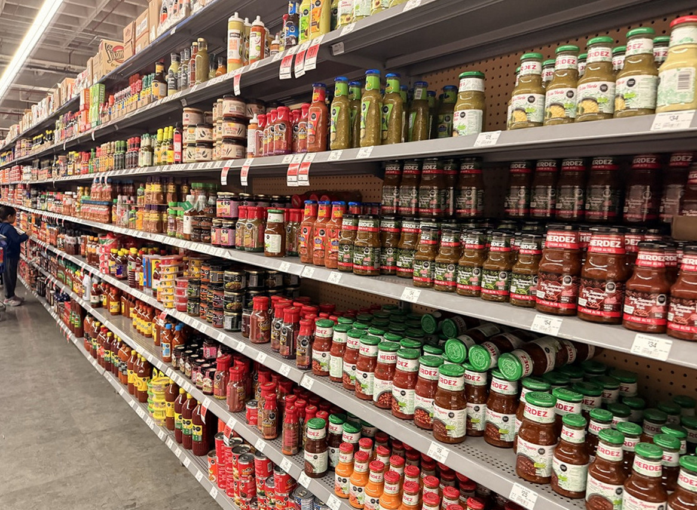
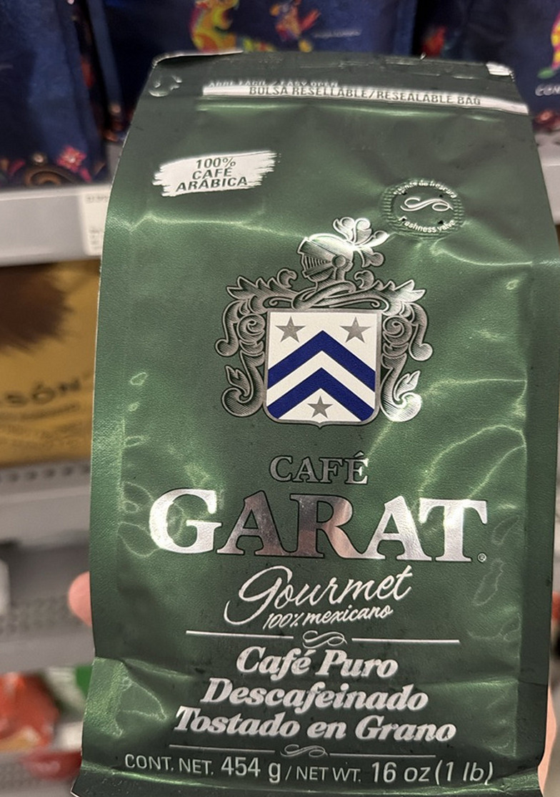
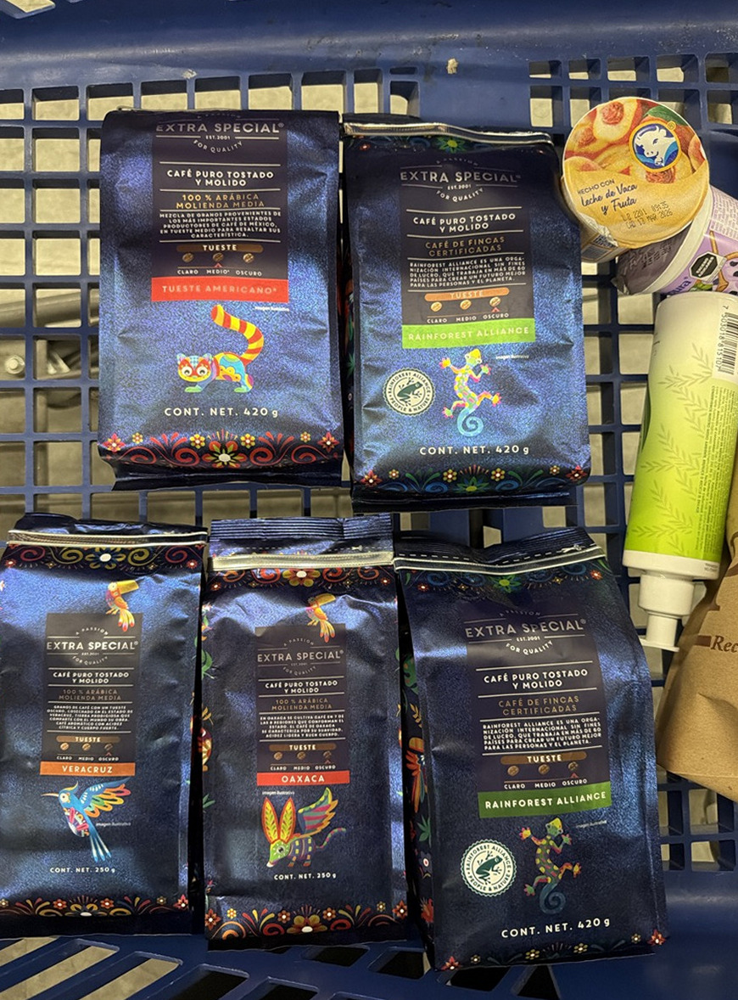
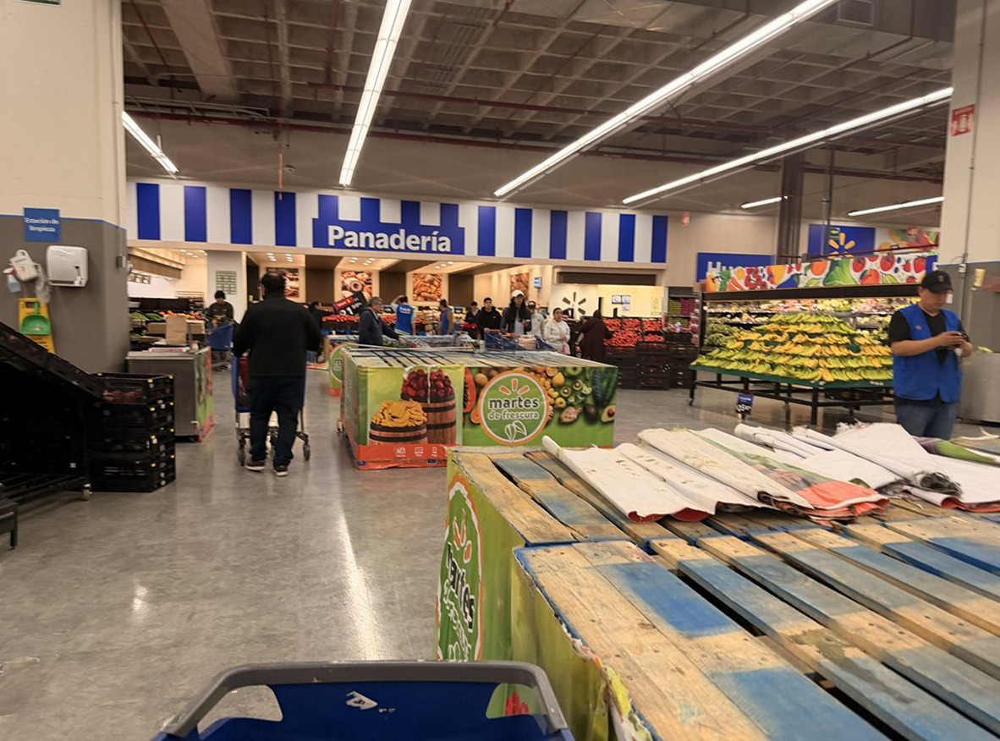

海外でのお土産選びに困ったことはないだろうか。観光地のお土産屋は割高で品質にもばらつきがある。そんな時に意外と役立つのが、現地のローカルスーパーだ。メキシコシティではウォールマートが各地にあり、帰国前のお土産まとめ買いに重宝した。

お土産として買えるもの
ウォールマートのお土産としておすすめのカテゴリは大きく3つ。
サルサソース・チリソース
メキシコ料理に欠かせないサルサ（Salsa）は、種類と量が圧倒的だ。ハラペーニョ、チポトレ、アドボなど味のバリエーションが豊富で、1本あたり30〜80ペソ（250〜650円程度）と安価。日本でも輸入食材店で売っているが、現地だとその10倍の種類がある。メキシコ料理が好きな人へのお土産には最適だ。

コーヒー
メキシコはコーヒーの産地でもあり、チアパス・オアハカ・ベラクルス産のスペシャルティコーヒーが手ごろな値段で並んでいる。おすすめブランドは2つ。
- Café Garat（カフェ・ガラット） — メキシコの老舗コーヒーブランド。デカフェも充実しており、豆・粉どちらもある。187〜189ペソ（454g）
- Extra Special（エクストラ・スペシャル） — レインフォレスト・アライアンス認証のサステナブルコーヒー。チアパス・ベラクルスなど産地別ラインナップが豊富。パッケージのアレブリヘ（色鮮やかな民芸動物）デザインがそのまま土産になるほど可愛い。135〜200ペソ（250〜420g）


チョコレート・スナック
メキシコといえばカカオの原産地でもある。Abuelita（アブエリータ）などのホットチョコレート用タブレットは日本ではあまり見かけず、かさばらないので複数買っても安心。またチリ味のグミやキャンディーもメキシコならではで、日本人にとっては新鮮な味として喜ばれやすい。

ウォールマートを使うメリット
- 値段が定価なので交渉不要・ぼったくりなし
- クレジットカード・デビットカード払いが可能
- 日曜や夜間も営業している店舗が多い
- 袋詰めサービスがあり（チップ：5〜10ペソが目安）
- 観光疲れの合間に冷たい飲み物や軽食の補充もできる
観光土産店のルチャドール人形も悪くないが、毎日の食卓で使えるサルサやコーヒーは実用的なお土産として喜ばれやすい。「スーパーで買ったの？」と思われることを気にしないなら、ウォールマートは真剣にお土産ハンティングができる場所だ。
Walmart メキシコシティ 歴史地区近く
| 住所 | Av. José María Izazaga, Centro Histórico |
| 営業 | 7:00〜23:00（店舗により異なる） |
| 支払い | 現金・クレジットカード・デビットカード可 |
| アクセス | 地下鉄2号線 Salto del Agua駅から徒歩5分 |
今回訪れた場所
1
Walmart メキシコシティ歴史地区店
Av. José María Izazaga, Centro Histórico / 地下鉄2号線 Salto del Agua駅から徒歩5分 / 7:00〜23:00